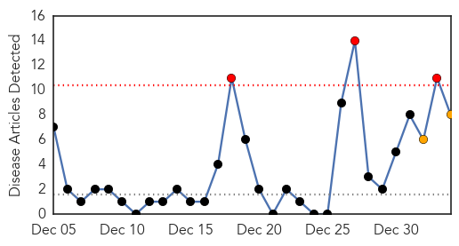
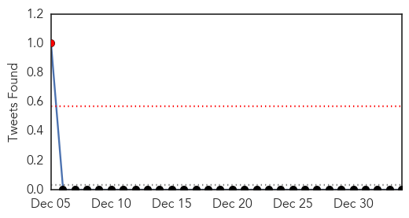

30 Day Trends
Web: 3 alerts, 2 warnings
Twitter: 1 alerts, 0 warnings
Top Articles:
- 1.000
- India records four fresh cases of swine flu
- 0.999
- Five swine flu cases in three days of this year
- 0.998
- Two fresh cases of swine flu reported in Delhi
- 0.995
- Flu season turns deadly in Michigan
- 0.989
- Keep track of H1N1 patients, health dept tells Hyderabad’s corporate hospitals
- 0.986
- Flu season turns deadly in state
- 0.979
- Take steps to check swine flu: VK Singh
- 0.959
- Two fresh cases of swine flu reported in Delhi
Top Tweets:
-
No tweets found for Jan 03, 2015
Web/News Articles
Tweets
Article Locations

Article Confidences